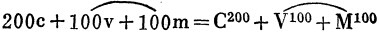

[130]第三章FN1
流通过程和再生产过程的现实条件
资本的直接生产过程，就是劳动过程和价值增殖过程。这个过程的结果是商品产品，它的决定性动机是生产剩余价值。
| 可变资本＋0，或 |
| 因为剩余价值不是预付在 |
| 分解为可变资本 | 社会资本生产上的部分。 |
 特别是由于我们当前的目的，我们应当从Ｗ′的各个组成部分的价值补偿和物质形式补偿的观点来进行分析。在分析单个资本的产品价值时，我们假定，单个资本家通过出售他的商品产品，先以货币形式补偿他的资本的组成部分，然后通过再购买各种生产要素，把它们再转化为生产资本。现在，我们已经不能再满足于这个假定了。既然这些生产要素是客观的东西，那它们就同用来和它们交换并由它们来补偿的单个产品一样，是社会资本的组成部分。另一方面，工人用工资和资本家用剩余价值所消费的那部分社会商品产品的运动，不仅是总产品运动的一个不可缺少的环节，而且同单个资本的运动交织在一起。因此，只是假定这个部分存在，是不能说明这个过程的。
特别是由于我们当前的目的，我们应当从Ｗ′的各个组成部分的价值补偿和物质形式补偿的观点来进行分析。在分析单个资本的产品价值时，我们假定，单个资本家通过出售他的商品产品，先以货币形式补偿他的资本的组成部分，然后通过再购买各种生产要素，把它们再转化为生产资本。现在，我们已经不能再满足于这个假定了。既然这些生产要素是客观的东西，那它们就同用来和它们交换并由它们来补偿的单个产品一样，是社会资本的组成部分。另一方面，工人用工资和资本家用剩余价值所消费的那部分社会商品产品的运动，不仅是总产品运动的一个不可缺少的环节，而且同单个资本的运动交织在一起。因此，只是假定这个部分存在，是不能说明这个过程的。


| （γ） |
（Ⅰ）消费资料：Ｖ300＋Ｍ300 |
|
（Ⅱ）生产资料：Ｃ1200。 |
| （Ⅰ）消费资料：Ｖ300 | │ | ＋Ｍ300 |
| （Ⅱ）生产资料：Ｃ1200。 |


| 1800镑。产品价值 | │ | Ｃ1200 | │ | ＋Ｖ300＋Ｍ300 |
| 全部产品 | 生产资料 | 消费资料 |
| 1800镑。产品价值 | │ | Ｃ1200 | │ | ＋Ｒ600 |
| 全部产品 | 生产资料 | 生活资料 |
 【Ｃ1200＋Ｖ300＋Ｍ300】。
【Ｃ1200＋Ｖ300＋Ｍ300】。 （Ｖ300＋Ｍ300），而（＝600镑）是实现着一年中重新加进的全部劳动的价值。
（Ｖ300＋Ｍ300），而（＝600镑）是实现着一年中重新加进的全部劳动的价值。|
（Ⅰ）价值：600镑 产品——消费资料 | │ |
 【400ｃ＋100ｖ＋100ｍ或Ｃ400＋Ｖ100＋Ｍ100。】 |
【ｖ＋ｍ】，分解为一年内重新生产出来的价值，也就是说，应当是体现着生产这些生产资料所花费的劳动的价值。其次，因为劳动剥削率等于100％，所以这400镑应当等于200ｖ＋200ｍ，或Ｖ200＋Ｍ200。相反，这1200镑中的800镑应当只是再现在生产资料价值中的不变资本价值。因此，我们得出：|
（Ⅱ）价值：1200镑 生产资料 | │ |
 【800ｃ＋200ｖ＋200ｍ或Ｃ800＋Ｖ200＋Ｍ200。】 |
|
价值＝400镑 | │ |
 【200ｃ＋100ｖ＋100ｍ或Ｃ200＋Ｖ100＋Ｍ100。】 |
|
价值＝800镑 | │ |
 【600ｃ＋100ｖ＋100ｍ或Ｃ600＋Ｖ100＋Ｍ100。】 |
|
（Ⅰ）价值600镑的消费资料 （Ⅱ）价值1200镑的生产资料 | │ |
 |
 ＋Ｍ100。这Ｃ400应当同（Ｖ＋Ｍ）400（Ⅱ）相交换，因为它们总是应当从它们借以存在的产品形式转化为这些消费资料的生产资料形式。但是，在Ⅱ中只有一定量产品（由生产资料组成的产品）价值才能由它的生产者用于消费资料，而且这个数量等于新加进Ⅱ的分解为Ｖ和Ｍ的价值。因此，（Ｖ＋Ｍ）Ⅱ应当等于400镑。这个量在Ｖ和Ｍ之间的分配丝毫改变不了这一点：它们的量应当等于Ｃ400（Ⅰ）。在这里，这种分配是无关紧要的。假定在这里分配情况是200Ｖ加上200Ｍ。在生产这（Ｖ＋Ｍ）400（Ⅱ）时，消费掉一定量的生产资料，而生产资料应靠Ⅱ的产品得到实物补偿。比例是无关紧要的。但是，这只能是生产资料的价值额，这些生产资料由重新加进Ⅱ的并创造出新价值（Ｖ＋Ｍ）400的劳动所消费。在这里，我们假定这个量等于800Ｃ。
＋Ｍ100。这Ｃ400应当同（Ｖ＋Ｍ）400（Ⅱ）相交换，因为它们总是应当从它们借以存在的产品形式转化为这些消费资料的生产资料形式。但是，在Ⅱ中只有一定量产品（由生产资料组成的产品）价值才能由它的生产者用于消费资料，而且这个数量等于新加进Ⅱ的分解为Ｖ和Ｍ的价值。因此，（Ｖ＋Ｍ）Ⅱ应当等于400镑。这个量在Ｖ和Ｍ之间的分配丝毫改变不了这一点：它们的量应当等于Ｃ400（Ⅰ）。在这里，这种分配是无关紧要的。假定在这里分配情况是200Ｖ加上200Ｍ。在生产这（Ｖ＋Ｍ）400（Ⅱ）时，消费掉一定量的生产资料，而生产资料应靠Ⅱ的产品得到实物补偿。比例是无关紧要的。但是，这只能是生产资料的价值额，这些生产资料由重新加进Ⅱ的并创造出新价值（Ｖ＋Ｍ）400的劳动所消费。在这里，我们假定这个量等于800Ｃ。 【32ｃ + 8ｖ+8ｍ】= 48镑（一年为1200镑）。
【32ｃ + 8ｖ+8ｍ】= 48镑（一年为1200镑）。|
|
（Ⅰ）消费资料：600镑=Ｒ600=Ｖ300＋Ｍ300 （Ⅱ）生产资料：1200镑=Ｃ1200 |

 ，也就是说，这些商品量等于Ｘ（），因此每个资本家向另一个资本家购买消费资料，为此支付ｃ＋，然而Ⅰ的资本家阶级购买的消费资料的总价值，只等于它所生产的全部剩余价值＝Ｍ100，并且按照我们的假定，各单个资本家作为Ｍ100的组成部分取出的那部分价值，只等于他自己所产生的剩余价值；也就是说，如果他生产出Ｍ100的1/20，那么这部分价值只是Ｍ100/20，即5镑。
，也就是说，这些商品量等于Ｘ（），因此每个资本家向另一个资本家购买消费资料，为此支付ｃ＋，然而Ⅰ的资本家阶级购买的消费资料的总价值，只等于它所生产的全部剩余价值＝Ｍ100，并且按照我们的假定，各单个资本家作为Ｍ100的组成部分取出的那部分价值，只等于他自己所产生的剩余价值；也就是说，如果他生产出Ｍ100的1/20，那么这部分价值只是Ｍ100/20，即5镑。| （Ⅰ）消费资料。600镑产品价值。 |
250镑货币，这就是： 100镑——可变资本的货币形式， 50镑——收入的流通手段，以及 100镑——用于不变资本流通的货币形式，总共250镑。 |
| （Ⅱ）生产资料。1200镑产品价值。 |
700镑货币： 200镑——可变资本的货币形式， 100镑——收入的流通手段，以及 400镑——不变资本的货币形式 |


|
Ｃ200a（αα的生产资料形式）和劳动力+ |
|
Ｖ50a（货币资本） 价值50镑的劳动力 |
| Ⅱαα． |
| Ｃ200αα（作为α的生产资料的Ｃ100 和作为as的生产资料的Ｃ100＋Ｖ50αα（50镑货币形式） ＋不变资本200（αα）流通所必需的100镑 ＋价值50镑的劳动力。 |
|
＋ ＋ |
|
Ｖ100（100镑货币资料）＋Ｖ100（100镑货币资料） 价值100镑的劳动力＋价值100镑的劳动力 |


| ( |
＝Ｗββ的100镑 ＝Ｗβ的50镑 |
) | ＝150镑 |
| ＋ |
Ⅰ（ａ）、Ⅱαα和Ⅱα的150镑； Ⅰ（ｂ）、Ⅱββ和Ⅱβ的150镑。 |
＝300镑 |
 ，其中Ｍ50αα和Ｍ50α在转化为货币以后用来购买Ｗ100（Ⅰｂ），而100镑仍留在Ⅱα和Ⅱαα中作为可变资本Ｖ50α和Ｖ50αα的回流。
，其中Ｍ50αα和Ｍ50α在转化为货币以后用来购买Ｗ100（Ⅰｂ），而100镑仍留在Ⅱα和Ⅱαα中作为可变资本Ｖ50α和Ｖ50αα的回流。


|
（=300镑） （=300镑） Ⅱ（αα）=Ｃ200αα+Ｖ50αα+Ｍ50αα +Ⅱ（ββ）=Ｃ200ββ+Ｖ50ββ+Ｍ50ββ （=300镑） （=300镑） Ⅱ（α）=Ｃ200α+Ｖ50α+Ｍ50α +Ⅱ（β）=Ｃ200β+Ｖ50β+Ｍ50β （=300镑） （=300镑） |
|
（α）Ｖ=2Ｍ。 （=400镑） （=200镑） Ⅱ（αα）=Ｃ266+（6/9）αα+Ｖ88+（8/9）αα+Ｍ44+（4/9）αα +Ⅱ（ββ）=Ｃ133+（3/9）ββ+Ｖ44+（4/9）ββ+Ｍ22+（2/9）ββ （=400镑） （=200镑） Ⅱ（α）=Ｃ266+（6/9）α+Ｖ88+（8/9）α+Ｍ44+（4/9）α +Ⅱ（β）=Ｃ133+（3/9）β+Ｖ44+（4/9）β+Ｍ22+（2/9）β （=400镑） （=200镑） （=350镑） （=250镑） Ⅱ（αα）=Ｃ266+（6/18）αα+Ｖ68+（1/18）αα+Ｍ48+（11/18）αα +Ⅱ（ββ）=Ｃ166+（12/18）ββ+Ｖ48+（11/18）ββ+Ｍ34+（13/18）ββ （=350镑） （=250镑） Ⅱ（α）=Ｃ233+（6/18）α+Ｖ68+（1/18）α+Ｍ48+（11/18）α +Ⅱ（β）=Ｃ166+（12/18）β+Ｖ48+（11/18）β+Ｍ34+（13/18）β （=350镑） （=250镑） （=250镑） （=350镑） Ⅱ（αα）=Ｃ166+（12/18）αα+Ｖ34+（13/18）αα+Ｍ48+（11/18）αα +Ⅱ（ββ）=Ｃ233+（6/18）ββ+Ｖ48+（11/18）ββ+Ｍ68+（1/18）ββ （=250镑） （=350镑） Ⅱ（α）=Ｃ166+（12/18）α+Ｖ34+（13/18）α+Ｍ48+（11/18）α +Ⅱ（β）=Ｃ233+（6/18）β+Ｖ48+（11/18）β+Ｍ68+（1/18）β （=250镑） （=350镑） |
 （b的商品）相交换。
（b的商品）相交换。 的ｂ的商品来补偿，而Ｃb1／Ｘ则靠价值为（Ｖ＋Ｍ）b2的ｂ2的商品来补偿。
的ｂ的商品来补偿，而Ｃb1／Ｘ则靠价值为（Ｖ＋Ｍ）b2的ｂ2的商品来补偿。|
|
Ｃａ（由ｂ1类补偿） Ｃｂ1（部分由自己的产品组成，部分由ｂ2得到补偿） Ｃｂ2（由自己的产品组成）。 |

作者原注
(1) 西尼耳夸夸其谈道：“野蛮人造弓就是从事工业，但他没有实行节欲。”（见第1册第582页[《马克思恩格斯全集》中文版第23卷第654―655页]）
恩·弗列罗夫斯基对俄国农民真正的节欲的描写值得引用来进行比较，他们不把自己的一部分谷物吃光，而把它当作种子材料“消费”42。
脚 注
FN1 本章从这里往下到第108页止由恩格斯收入《资本论》第2卷正文（《马克思恩格斯全集》中文版第24卷第389―397页）。在这里和在后面类似的情况下，某些字句上的出入，是由于恩格斯在辞句上作了修改，或者是为了使俄译文更准确而作的修改。——编者注
FN2 指《资本论》第1卷（《马克思恩格斯全集》中文版第23卷）。——编者注
FN3 见本卷第7―98页。——编者注
FN4 见《马克思恩格斯全集》中文版第23卷第234页。——编者注
FN5 见《马克思恩格斯全集》中文版第23卷第647―648页。——编者注
FN6 见《马克思恩格斯全集》中文版第23卷第247―250页。——编者注
FN7 见《马克思恩格斯全集》中文版第23卷第646―647页。——编者注
FN8 本章从这里往下到本页末止由恩格斯收入《资本论》第2卷正文（《马克思恩格斯全集》中文版第24卷第432―433页）。——编者注
FN9 见《马克思恩格斯全集》中文版第23卷第622页。——编者注
FN10 本段由恩格斯收入《资本论》第2卷正文（《马克思恩格斯全集》中文版第24卷第433页）。——编者注
FN11 本章从这里往下到第135页止由恩格斯基本上收入《资本论》第2卷正文（《马克思恩格斯全集》中文版第24卷第434―439页）。——编者注
FN12 见《马克思恩格斯全集》中文版第23卷第238―239页。——编者注
FN13 见《马克思恩格斯全集》中文版第23卷第247―248页。——编者注
FN14 本章从这里往下到第148页止由恩格斯基本上收入《资本论》第2卷正文（《马克思恩格斯全集》中文版第24卷第470―474页）。——编者注
FN15 见《马克思恩格斯全集》中文版第23卷第225―226页。——编者注
FN16 本章从这里往下到第156页止由恩格斯收入《资本论》第2卷正文（《马克思恩格斯全集》中文版第24卷第474―478页）。——编者注
FN17 本章从这里往下到第166页止由恩格斯收入《资本论》第2卷正文（《马克思恩格斯全集》中文版第24卷第478―484页）。——编者注
FN18 本章从这里往下到第172页止由恩格斯收入《资本论》第2卷正文（《马克思恩格斯全集》中文版第24卷第484―486页）。——编者注
FN19 亨·施托尔希《论国民收入的性质》1824年巴黎版第134、135、150页。——编者注
FN20 本章从这里往下到第174页止由恩格斯收入《资本论》第2卷正文（《马克思恩格斯全集》中文版第24卷第486―487页）。——编者注
FN21 见本卷第172页。——编者注
FN22 见《马克思恩格斯全集》中文版第23卷第382页。——编者注
FN23 同上，第417页。——编者注
FN24 参看卷末注40。——译者注
FN25 本章从这里往下到第196页止由恩格斯收入《资本论》第2卷正文（见《马克思恩格斯全集》中文版第24卷第533―536页）。——编者注
FN26 《马克思恩格斯全集》中文版第23卷第150―166页。——编者注
FN27 本章从这里往下到第222页止由恩格斯收入《资本论》第2卷正文（《马克思恩格斯全集》中文版第24卷第540―550页）。——编者注
FN28 见《马克思恩格斯全集》中文版第23卷第186页。——编者注
FN29 Ｒ在这里和以下都表示收入（“revenu”。）——编者注
FN30 见本卷第222―228页。——编者注
FN31 见本卷第232―235页。——编者注
FN32 见本卷第245―246页。——编者注
FN33 同上，第239―243页。——编者注
FN34 见本卷第245―246页。——编者注
FN35 这里和以下的方括号中的加数在手稿中被删掉。——编者注
FN36 见本卷第284页。——编者注
FN37 见本卷第292页。——编者注
FN38 见本卷第292页。——编者注
FN39 见本卷第292页。——编者注
FN40 方括号中的加数在手稿中被删去。——编者注
注 释
34 指本手稿第二章，本卷未发表（见注1）。——第101页。
35 马克思在这里是用法文引证杜格耳德·斯图亚特的《亚当·斯密的生平和创作概况》，这部著作曾屡次收入铅印版的斯密的经济学和哲学著作，其中也有一些法译本。马克思写作此手稿时利用的是哪个版本，难以确定。——第114页。
36 马克思这里使用的“Ａ部类”（或其他处使用的“第Ⅰ部类”）是指生产消费资料那一类工业部门，“Ｂ部类”（“第Ⅱ部类”）相应地是指生产生产资料的部门。在《资本论》第二卷的最后文本中，根据后来的方案对部类编号采用了相反的顺序。本手稿中在“部类”[подразделение]这个词义上还经常使用“类别”[категория]、“类”[класс]等术语。——第121页。
37 马克思引用的是约·斯·穆勒的著作《推论和归纳的逻辑体系，证明的原则与科学研究方法的关系》，两卷集，第一版1843年在伦敦出版。——第123页。
38 “我已经说了，我已经拯救了自己的灵魂。”——圣经里的话（以西结书，第3章第18―19节和第33章第8―9节）。——第128页。
39 见《马克思恩格斯全集》中文版第23卷第621―634页。——第136页。
40 “从本丢推给彼拉多”——意思是回避解决问题，进行拖延。用语出自福音书中的寓言，讲的是耶稣被敌人逮捕后，被送交罗马皇帝在巴勒斯坦的总督本丢·彼拉多。彼拉多不愿意进行判决，他把耶稣这个加利利人又送交加利利王希律，希律又把他送回彼拉多。——第156页。
41 马克思在《资本论》第一卷引用了罗·托伦斯《论财富的生产》（第70、71页）一书中的见解：“在野蛮人用来投掷他所追逐的野兽的第一块石头上，在他用来打落他用手摘不到的果实的第一根棍子上，我们看到占有一物以取得另一物的情形，这样我们就发现了资本的起源。”马克思评论这个见解时不无讽刺意味地写道：“根据那第一根棍子[stock]也许还可以说，为什么在英语中stock和资本是同义词”（见《马克思恩格斯全集》中文版第23卷第209页）。——第158页。
42 马克思说的是他从原文读过的瓦·瓦·别尔维的著作《俄国工人阶级的状况。恩·弗列罗夫斯基的考察与研究》（1869年圣彼得堡版），书中第191―192页举出俄国一些省的农民的例子，他们为了维护种子储备不被动用和保证谷物的简单再生产，不得不过着半饥饿的生活。——第158页。
43 显然，马克思这里指的是《再论规模不变的再生产》一节中谈不变资本的实物形式的补偿的地方（见本卷第178―185页）。——第168页。
44 马克思指斯密的如下见解：为企业主执行资本职能的一部分资本，形成工人的收入。在《资本论》第二卷中，对这个观点作了充分的批判（见《马克思恩格斯全集》中文版第24卷第422―424页）。——第171页。
45 指斯密的著作《国富论》中的一句话：“每一个国家的土地和劳动的全部年产品……最终必定要用于保证它的居民的消费……”（亚·斯密《国民财富的性质和原因的研究》，新四卷集，1843年伦敦版第2卷第357、358页）。——第172页。
46 指本手稿的第二章。该章第五节《积累。从剩余价值的实现，剩余价值转化为货币的角度研究货币流通》在《资本论》第二卷最后编定时单独编为第十七章（见《马克思恩格斯全集》中文版第24卷第355―388页）。——第192页。
47 见前注。——第192页。
48 指《规模扩大的再生产》这一节的分节（ｂ）《以货币流通为媒介的情形》，根据《目录》判断，马克思打算用这一分节来结束本手稿对再生产问题的考察（见本卷第6页）。——第198页。
49 “罗伊特的检察官”——看来是指德国幽默作家弗·罗伊特一些作品中的人物“检察官布雷济希”（Entspektor ßräsig）。——第213页。
50 法国研究院——法国的最高科学机构，由若干分院即学院组成；自1795年成立。德斯杜特·德·特拉西是伦理学和政治学学院院士。费拉得尔菲亚哲学协会——美国最早的科学协会之一，成立于1740年。——第222页。
51 马克思提到的是1861年进行的英格兰和威尔士人口调查材料，即《1861年英格兰和威尔士人口调查》1863年伦敦版。——第303页。